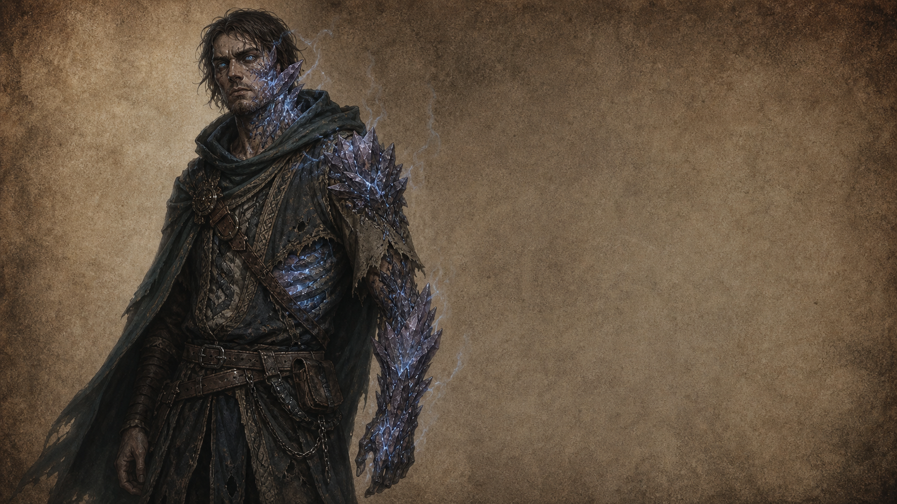
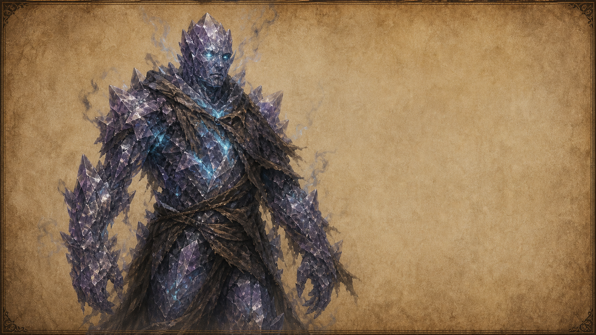

Расы / Молодая раса
Заражённые
Разумные изгнанники Великой эпидемии, чьи тела медленно заменяет живая кристаллическая эссенция.

История
Заражённые — самая молодая разумная раса мира. Они появились около ста лет назад после Великой эпидемии, когда искривлённая жизненная эссенция изменила выживших представителей разных народов.
Биология
Заражёнными не рождаются. Ими становятся люди, эльфы, дворфы и представители других народов, пережившие заражение. Большинство сохраняет память, личность и эмоции, но почти перестает стареть. Кристаллические участки тела трудно разрушить обычным оружием или магией, хотя боль и страх никуда не исчезают.
До определенной стадии заражённые способны создавать семьи и иметь детей. После сильной кристаллизации эта возможность исчезает.
Внешность
Главный признак заражённых — частичная кристаллизация организма. Кожа покрывается полупрозрачными серо-фиолетовыми кристаллами, через которые пробивается слабое голубоватое свечение. Кристаллы никогда не покрывают всё тело сразу: у одного поражена рука, у другого лицо, плечо, грудь или часть шеи.
Из трещин между живой тканью и кристаллом поднимается лёгкий дымок заражённой эссенции. Глаза постепенно становятся неоново-серыми и светятся в темноте.
Общество
После эпидемии все государства объявили заражённых угрозой цивилизации. Выживших изгнали в Мёртвые земли, где они начали строить собственные поселения. Происхождение постепенно потеряло значение: бывший человек, эльф или дворф для них прежде всего тот, кто пережил изгнание.
Культура памяти
Культура заражённых строится вокруг памяти. Они записывают истории прошлой жизни, хранят дневники предков, фотографии, украшения, ключи от домов и вещи, которые напоминают им, кем они были до заражения.
Особое место занимают церемонии памяти. На них семьи вспоминают тех, кто окончательно утратил самосознание и стал кристаллическим остатком самого себя.
Полная кристаллизация

Военное дело
Заражённые редко используют тяжёлую броню: их тело уже служит защитой. Они предпочитают длинное оружие, тактику истощения и естественные кристаллические наросты, которые могут работать как щиты или клинки.
Отношение к миру
Большинство заражённых не ненавидит обычных людей. Они хотят вернуться домой, но каждое государство уничтожает их при первой возможности, опасаясь новой эпидемии. Поэтому среди них растет идея обратить всё человечество, чтобы больше никто не оказался отвергнутым.
Люди
Боятся заражённых и считают их главной угрозой миру.
Эльфы
Изучают заражение как научный феномен и избегают эмоциональной оценки.
Дворфы
Считают заражение величайшей технологической катастрофой истории.
Орки
Исчезли задолго до появления заражённых; их руины не содержат упоминаний о подобном явлении.
Великие люди
Среди заражённых нет единой старой знати: их выдающиеся личности происходят из других рас. В хрониках Мёртвых земель встречаются бывшие велтирские офицеры, элидорские исследователи, дворфийские мастера и маркорские караванные судьи, которые после изгнания стали основателями новых поселений.
Интересные факты
Заражённые никогда не называют себя монстрами. Многие продолжают носить одежду и символику бывших государств. Некоторые десятилетиями хранят ключи от домов, в которые уже никогда не смогут вернуться.
В Мёртвых землях не разрушают дома умерших: считается, что воспоминания продолжают жить вместе с кристаллами. Самыми опасными существами считаются не заражённые, а морские чудовища — бывшие заражённые, которых ещё живыми сбрасывали в Мёртвое море.